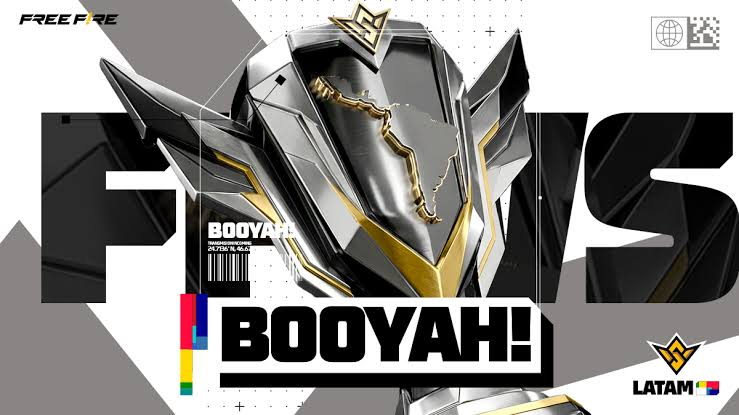
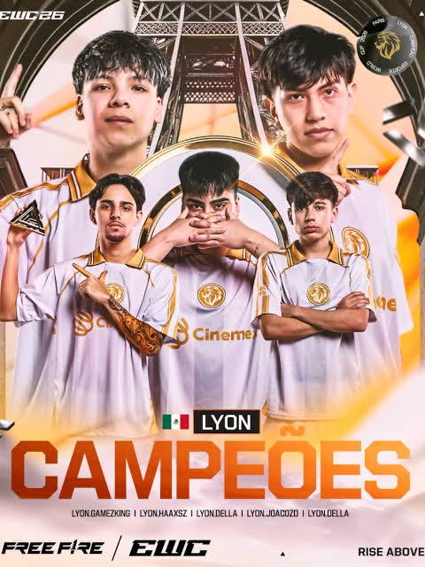
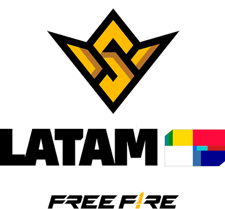
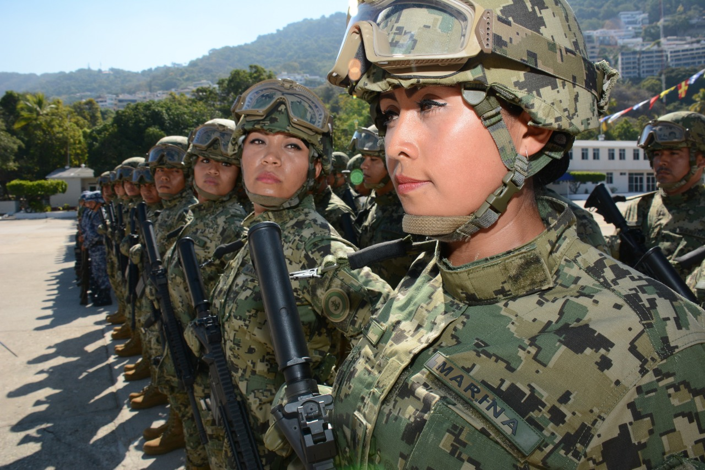
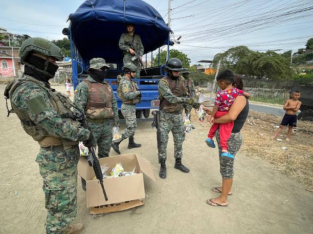
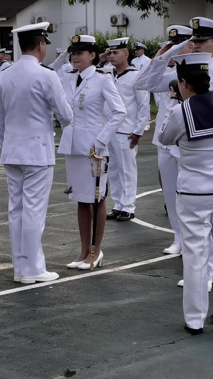

Servicios de militar y jugador profesional


Jugador competitivo de liga
Rol:Granadero igl o L2
Nombre real:Steven Tagua
Jugador que admira:Gamesking y haaxsz

Equipos:Estuvo en el equipo de DesKeved K12 creado por el mismo tambien pudo entrar al equipo de flama pero poco despues se retiro
Torneos:Jugo en varias scrims y peleo con diferentes equipos participo en un torneo en el cual logro ganar 20$ y un cupo al equipo de flama

Su estilo estrategico es lo que mas lo caracterizaba,solia pensar mucho antes de actuar,tiene una buena mecanica con la woodpeaker y con la m590
Controles:El antes jugaba a dos dedos pero porque no tenia suficiente velocidad se tuvo que adaptar al meta y cambiarse a 3 dedos

Como mienbro desde la Marina,mi mision es grantizar la seguridad y soberania de nuestros espacios acuaticos.A traves de la disciplina, el honor y el compromiso,protejo los recursos marinos y ejecuto operaciones tacticas para mantener la paz y el orden en nuestros territorios

Defensa y vigilancia:Patrullaje constante de las costas y aguas territoriales
Operaciones de rescate:Salvaguarda frontal al contrabardo,narcotrafico y pesca ilegal

Forma parte de la Marina de Guerra como mujer tiene como objetivo servir a la nacion con honor,disciplina y valentia,integrandose a la defensa de la soberania maritima y al resguardo de las aguas territoriales.Este camino busca romper estereotipos en un hamnbito historicamente